Jack's Drawing Blog
I'm going to be drawing frequently and uploading my thoughts, as well as my drawings to this page. Please keep checking.
-
January 13, 2025
Long time since last post. I haven't drawn at all recently. I had been working on this drawing for a while after the last post. I probably won't be drawing for a while. I'm busy with lots of other personal projects and other skills I'm trying to learn (music right now). I still plan on drawing in the future, so I'm keeping this blog up and I plan on returning at some point. I think I was pretty happy with this cabin, I was planning on painting it at some point. It was inspired by my current desktop wallpaper.
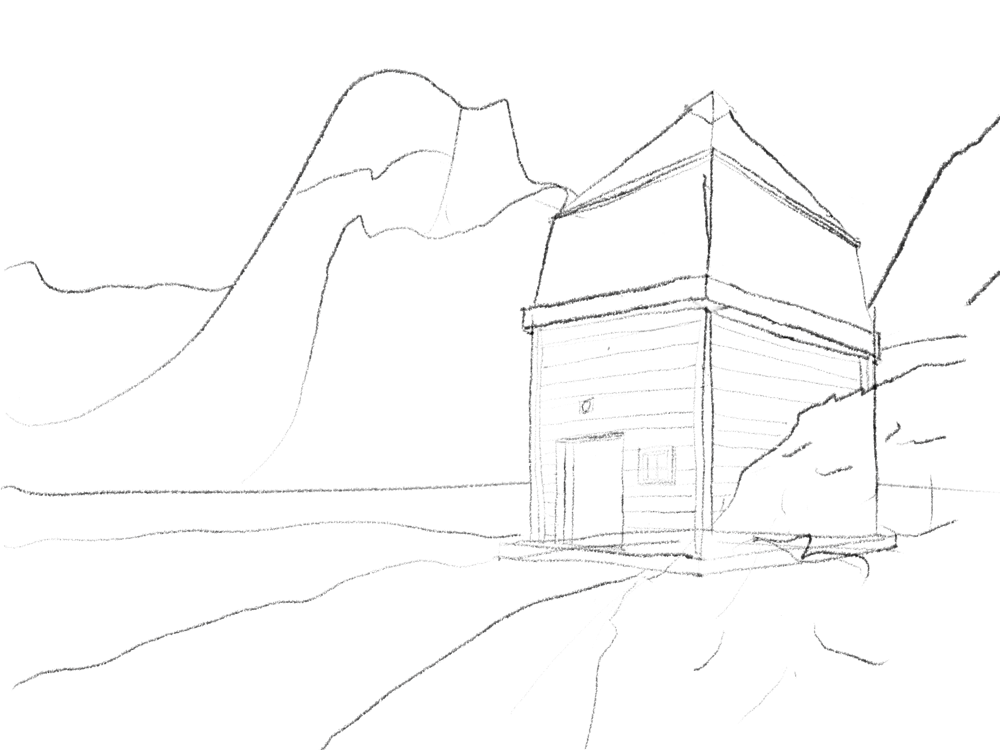
November 17, 2024
It's been a while since I drew last. These are technically images that a drew a while ago and am just uploading now, but I'm working on some new stuff. It's hard to find time for everything and motivate myself. I started using a pencil brush in procreate, and I like how it looks but I don't want to it be a crutch. I also bought a real pencil and paper, but I haven't used them yet. The person and the car turned out much better than I expected; I need to started drawing actual things instead of just practicing. I feel like I have improved so much since I started, but it still kind of demotivates me when I see how basic my skill still is. I'm going to finish a whole "piece" for the next update.
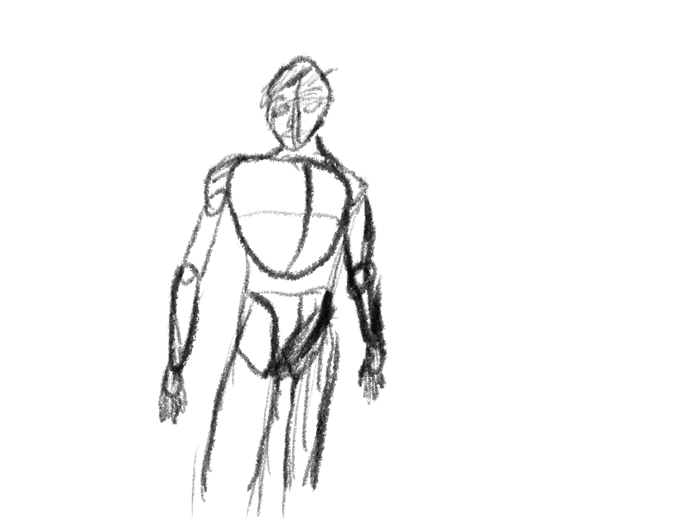
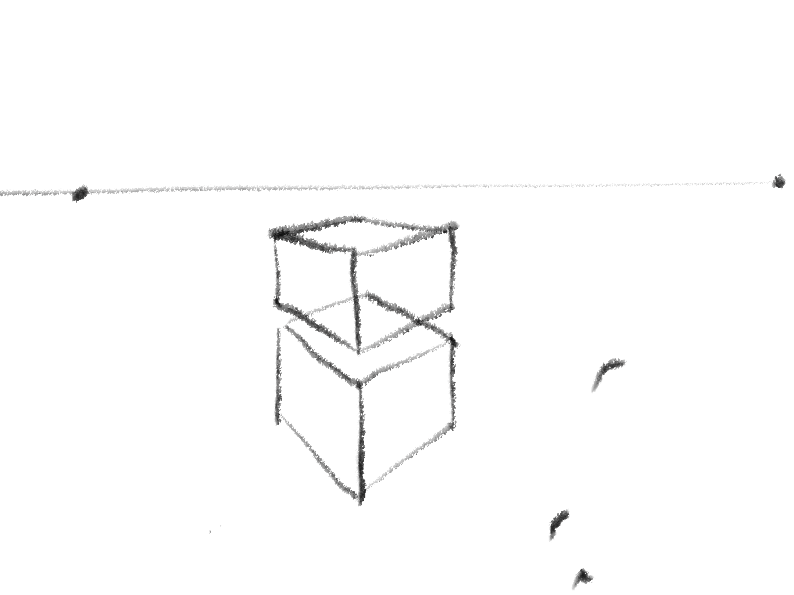
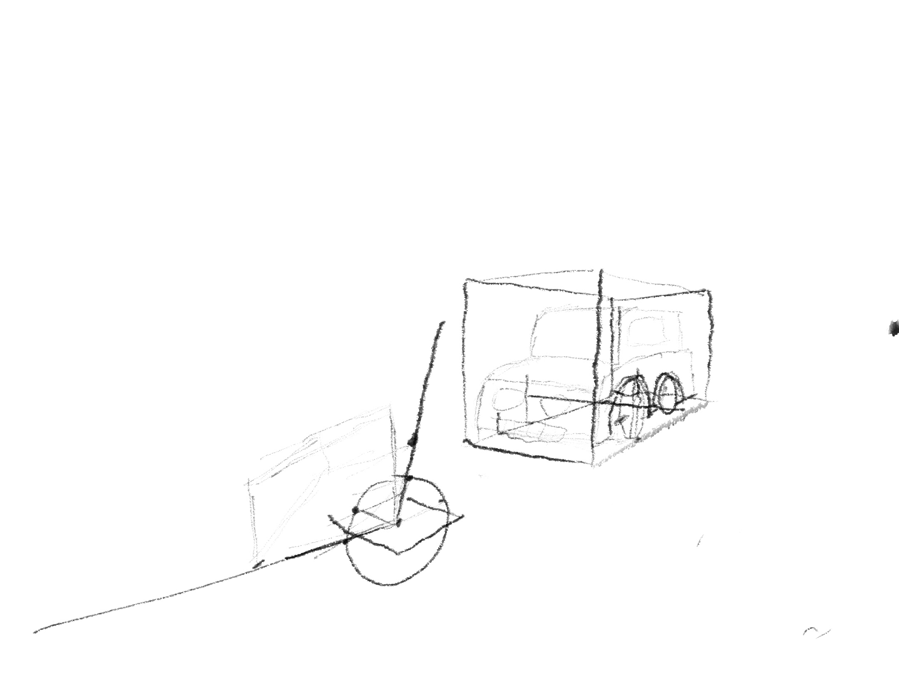
-
October 16, 2024
Its been a few days since the last update again. This time I worked on two point perspective and it was easier than I thought, bfut I used the perspective tool built into procreate. I tried to draw a house with an overhang on the roof, and a car next to it. I have some more ideas for perspective drawings for next time. I also drew some stuff for the game on working on right now. I attempted to draw some key art for the steam marketing assets, and a upper body proportion of the NARC character. I definitely need to refresh on drawing people, and I should practice faces some more. I have some drawlikeasir videos queued up for next time. I'm happy with my learning speed.
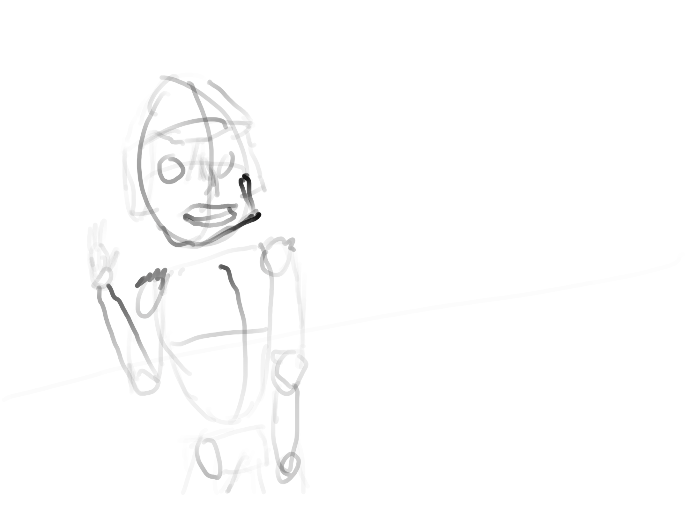
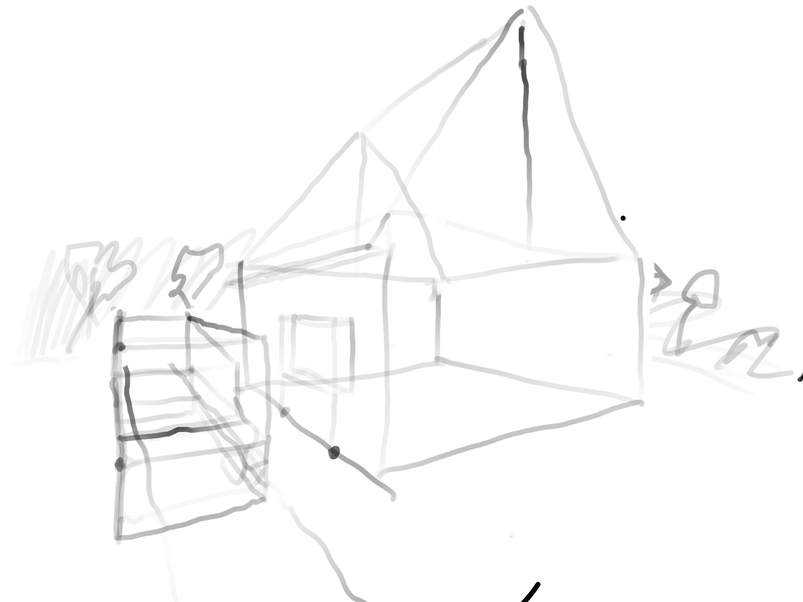
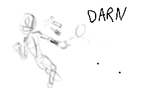
-
October 12, 2024
I've already broken my promise of drawing every single day, but it's better 5 days late than never. I've been drawing at the end of the day right before I go to bed, and since I've been busy and tired recently, I skipped drawing. I should start drawing earlier in the day and in a better location (not my bed) so that my hand can make better lines, but it still feels kind of embarrassing to draw in public or on my desk. I didn't draw as much today,and watched a longer video on perspective by drawlikeasir again. It's kind of hard to decide which of his videos to watch, since there are so many on similar topics, they are all very helpful. I can't believe that I didn't really know perspective before this, it's so important for drawing anything. I'm going to practice drawing a real scene with it next time. I drew the second image yesterday while explaining a rendering idea to my friend.
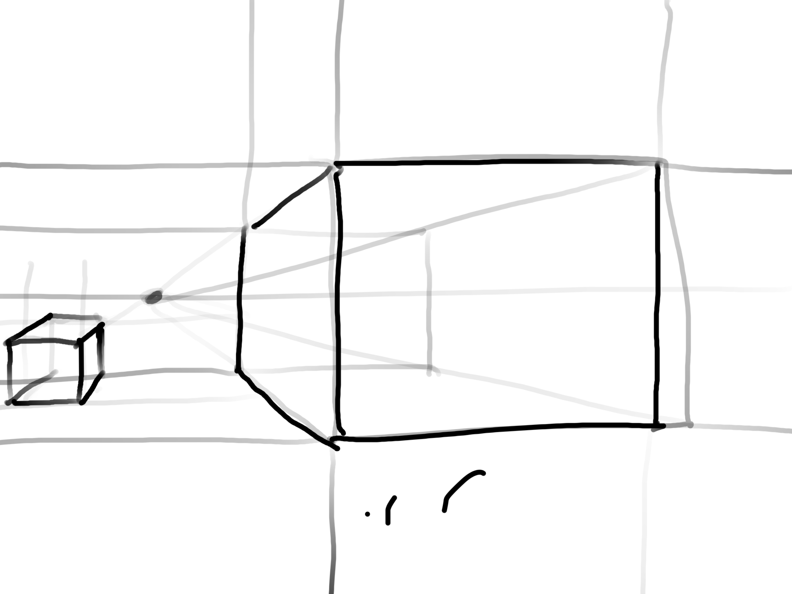
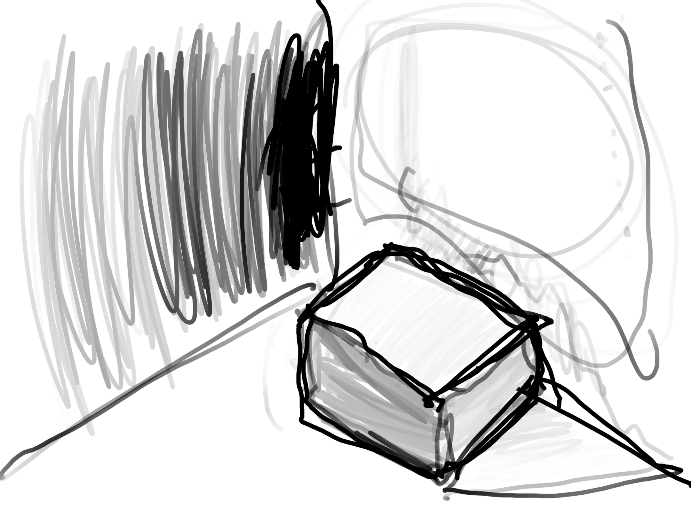
-
October 7, 2024
I "started" the first drawing during my calculus lecture. I tried to draw some more complicated perspective, the rows and stairs were very confusing, and I didn't really do them right. I was pretty happy with the body. I followed drawlikeasir's tutorial on drawing faces for the second image. It didn't turn out great but I think that if I do it again I can do a much better job, now that I know what each line is for from the start. I had never followed a face tutorial before this, it's not as hard as I thought, I can definitely improve.
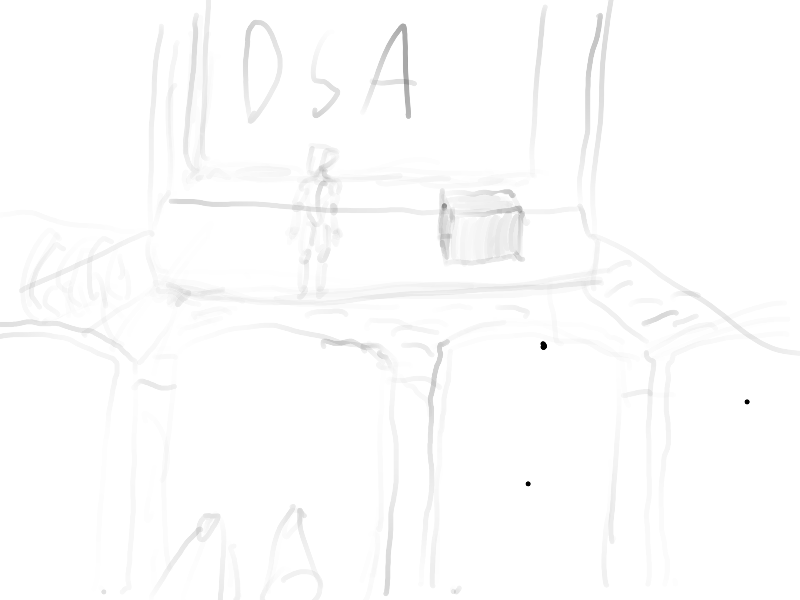
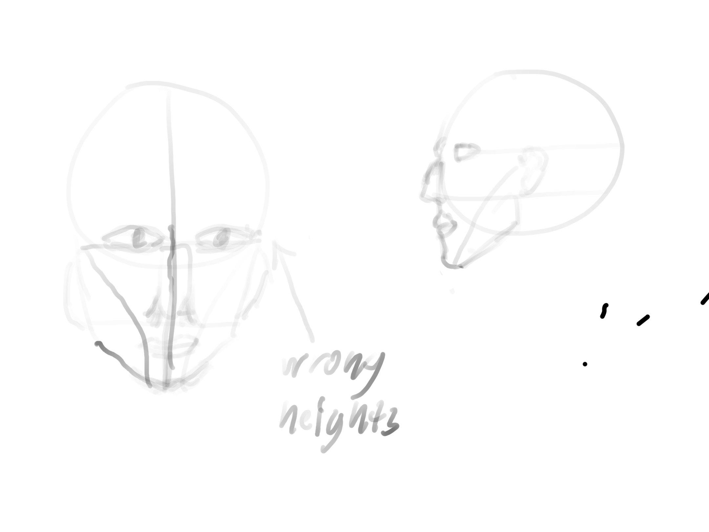
-
October 6, 2024
I drew hands for the first time, based on a tutorial I watched from drawlikeasir a few days ago. I think they turned out pretty good, but I should try some more perspectives. I also tried drawing another room with abnormal shapes, but I don't think it turned out as good. I'm glad that I'm so happy with the hands, the second drawing would be a hit to my morale otherwise.
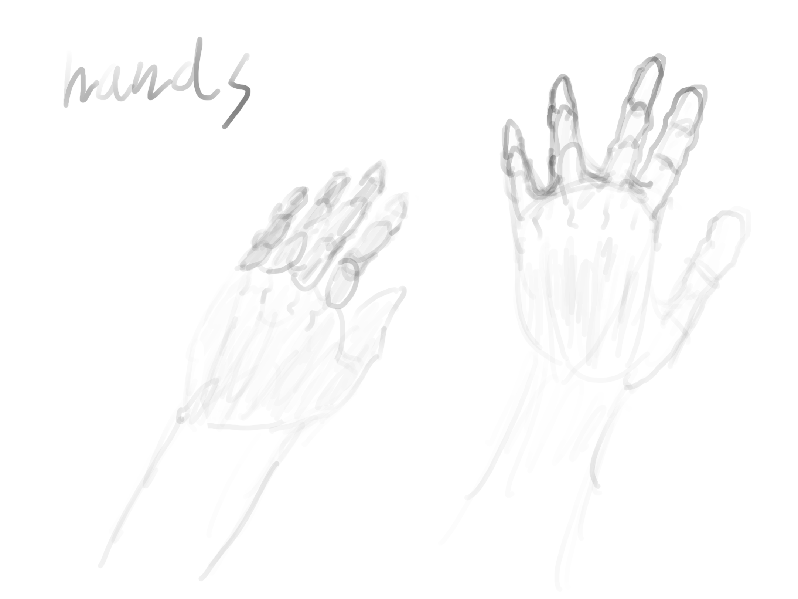
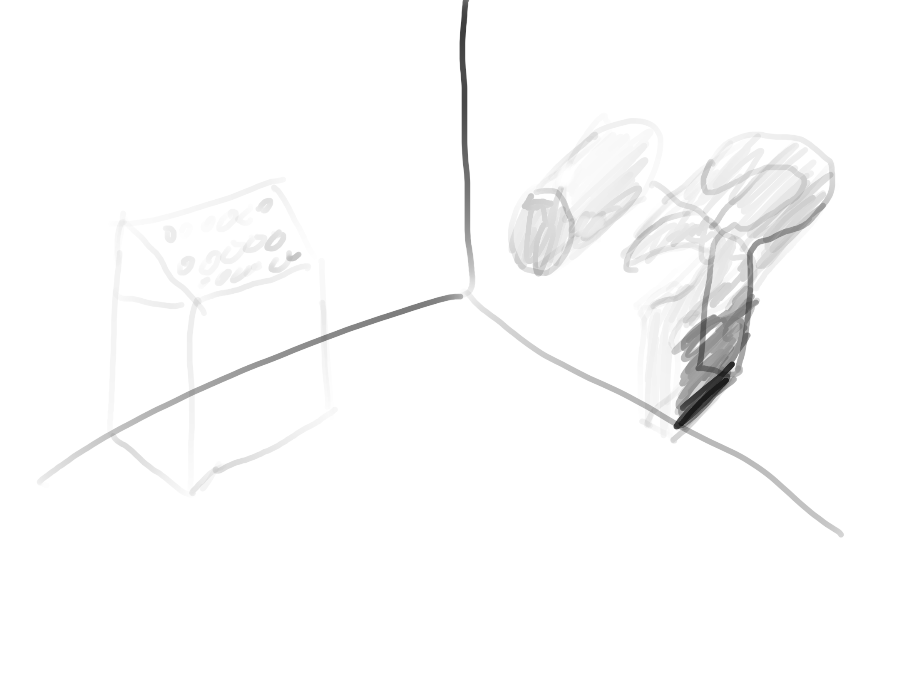